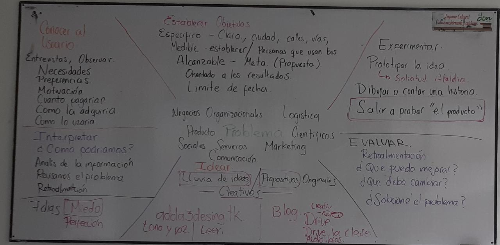

Se de antemano que en Bogotá cambiar la ruta predeterminada ya sea para llegar al trabajo o a casa
puede ser una idea que suene fatal. Pero vamos a intentarlo y aquí te doy unas ideas que puedes
tomar a la hora de realizar este cambio cualquier día:
1. Cambia el camino a la estación o al bus.
2. Si usas transmilenio prueba con otra ruta. Anímate a subir a una estación donde consigas un asiento, normalmente son los portales o estaciones de uso frecuente.
3. Sal un poco más temprano y prueba una ruta de SITP.
4. Pregunta en tu oficina quien vive cerca y compartan vehículo.
5. Si vas en cicla usa otra ruta, busca parques que puedas atravesar durante el recorrido.
6. Has una parada para comprarte un dulce que puedas comer mientras esperas el bus.
7. Descarga un audiolibro y reprodúcelo durante el viaje.
8. Cualquier idea para romper la rutina es valida, si tienes más ideas no dudes en hacérmelas llegar por mi correo.
Anímate a salir a cine, sola o solo, con tu pareja, hijo, amigo, etc, pero ¡vamos!. Puedes escoger también teatro, te recomiendo la página:
bogota.gov.co/que-hacer donde encontraras todo tipo de actividades gratis en Bogotá. Si puedes aprovecha el horario y días de cine a mitad de precio, pregunta en tu
trabajo si tienen convenios con empresas de entretenimiento, suele salir más económico adquirir entradas desde allí.
¿Recuerdas ese instrumento que tanto querías aprender a tocar? Pues ha llegado la hora, anímate a comprarlo, te recomiendo buscar en el MarketPlace de Facebook el instrumento,
y buscar en YouTube como aprender a tocarlo, si lo tienes en casa muchísimo mejor. Si lo que quieres es un idioma comienza por instalar una aplicación en tu celular que te
ayude a aprender todos los días por lo menos una palabra nueva. Inscríbete a esa clase de Zumba que tanto has mirado por la calle, o al Gimnasio. Aprende un nuevo deporte
¿Qué tal jugar ajedrez? es un juego bastante estimulante. Pero lo importante es que aprendas algo nuevo que puedas compartirle más adelante a un amigo o familiar.
Sal al parque, cicloruta, conoce un museo o iglesia histórica. Conoce lugares de Cundinamarca famosos como la laguna de Ubate, Monserrate, la Calera, la catedral de Sal,
haz el recorrido del tren de la Sabana, etc.
Es hora de darnos un tiempo, busca un libro o una hoja y lápiz, dibuja lo que quieras, pinta cuadros, te recomiendo muchísimo los cuadros para pintar por números. Escribe tu día
¿cómo te sentiste hoy?, ¿qué quieres hacer mañana?, ¿qué esperas cuando te gradúes de tu carrera?, tomate este tiempo sin teléfonos celulares, televisión, computadores, que sea
un espacio para ti.
Haz algo diferente, almuerza en otro sitio, tomate un café luego de almorzar, cambia la ruta, prueba nuevas cosas ¿Qué tal comida árabe?, existen muchísimas recetas que puedes
preparar, anímate a buscar en internet un nuevo plato y cocínalo, prueba nuevas cosas, ¿ya has probado esa salsa rara que vez siempre en el supermecado pero te da miedo que no
te guste? pues llego la hora de comprarlo.
Anímate a escribir la idea de tu negocio, dibuja el logo que te gustaría que tuviera, compra una libreta para ese proyecto, empieza a escribir como puedes lograrlo, que cosas
necesitas, pero sobre todo se muy creativo, no pienses aún en dinero, si necesitas un Jet privado para realizar el viaje de tus sueños, anótalo, siente que ya estás haciendo

En la clase pasada se revisaron los pasos para lograr una solución creativa y como esta se vuelve en innovadora. Existen pasos que permiten orientar nuestro problema
y darles una solución que responda tanto a las necesidades del mercado como al cliente que consistian en:
1. Debe existir un problema. Todos los días las personas y la empresas nos enfrentamos a diferentes problemas, las personas como clientes o usuarios de un servicios (educativo,
transporte, comunicación, etc.) y las empresas con desde lo adminsitrativo, financiero, producción, tecnología, marketing, entre otros. Sin embargo siempre se recomienda escoger
un tema que nos guste o tengamos cercania y queramos cambiar, esto nos ayduará a tener determinación y por lo tanto finalizar la investigación que nos permitirá encontrar
una solución a dicho problema.
2. Establecer objetivos. Luego que hemos detectado el problema debemos hacer una recoelcción de la mayor información acercar del problema, buscar fuentes priamrias y secundarias,
para ser lo suficientemente criticos al hablar del tema. Su problema debe ser claro y especifico, delimite la ciudad, el rango de edad, si aplica el genero, o lo que considere
necesario. Revise que sea medible, esto quiere decir que podemos revisar que el problema se resolvio con estadistica o datos comprobable. Proponga una meta, no siempre podrá dar
solución inmediata al problema, pero claro que puede dar un aporte para que se siga ejecutando con mayor presupuesto o tiempo, siempre debe dar un resultado. Y finalmente ponga
una fecha limite para solucionar el problema, en este caso 12 de Octubre.
3. Conocer el cliente. El cliente es la razón de exitir del problema, no necesariamente es aquel que compra un producto o servicio, sino por ejemplo, en una ciudad, todos somos
los ciudadanos son clientes de ella, por eso es que somos tan importantes para los candidatos a la alcaldia. Esto quiere decir que el problema puede ser de tipo social. Volviendo
al tema de conocer al cliente, es muy importante determinar: Sus necesidades, preferencias y motivaciones. Esto nos ayudará a comprender aún más el problema y lo que ellos
esperan obtener como solución, en caso de un producto además conviene saber: ¿Cuanto pagarian?¿Como lo adquiriria? o ¿Como lo usaria?.
4. Interpretar ¿Como podríamos?. En este punto es importante analisar toda la información que hemos obtenido en el paso anterior. Revisamos el problema, es importante no dejar
de lado toda la documentación acerca del problema que habiamos revisado y ser coherentes con como se esta llevando la investigación.
5. Idear. En este paso realice una lluvia de ideas, como la que hicimos en clase, pregunte quien más tiene ideas, anote todas quizas más adelante las ideas más "locas" tomen
sentido. Olvide el miedo y evite ser perfecto, esto quita creatividad. Sea lo más propositivio y original, mantenga su toque "tono y voz" esto ayudará a que aunque se base en otros,
logre ser creativo a su manera. Y para esto son los 7 dias de la creatividad.
5. Experimetnar. En este punto pruebe la solución, prototipe la idea, dele forma y acerquese a darle solución lo más que puedas. Salga a probar el "producto"
6. Evaluar. Luego de ver como funciona y como es acogido por las personas evalue la solución y busque mejoras. ¿Que puedo mejorar?¿Que debo cambiar?¿Soluciones el problema?
7. Escriba el documento y envielo al correo adda_vargas@cun.edu.co. El orden del documento es el Titulo(Problema) Marco Teorico (Establecer objetivos - Documentación) Desarrollo
(Conocer al cliente, interpretar, idear), Conclución y anexos (Experimentar y evaluar).